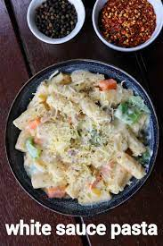

-+- White Sauce Pasta -+-

An easy and popular cheesy pasta recipe made with creamy white sauce with soft and tasty penne pasta. The recipe is very much inspired from the italian white-coloured pasta but tweaked and adjusted to the indian taste buds. It can be either served for lunch or dinner or as a perfect lunch box recipes for kids and adults.
Ingredients :
For boiling the pasta:
- 6 cup water
- 1 tsp salt
- 2 cup pasta (elicoidali or penne)
For sauteing vegetables:
- 2 tbsp oil
- 3 clove garlic (finely chopped)
- ½ onion (chopped)
- ½ carrot (chopped)
- ½ capsicum (chopped)
- 3 tbsp sweet corn
- ½ tsp pepper (crushed)
- ½ tsp salt
For the white sauce:
- 2 tbsp butter
- 3 tbsp maida / plain flour
- 2 cup milk
- ½ tsp pepper (crushed)
- ½ tsp chilli flakes
- ½ tsp mixed herbs
- ½ tsp salt
- cheese (for garnishing)